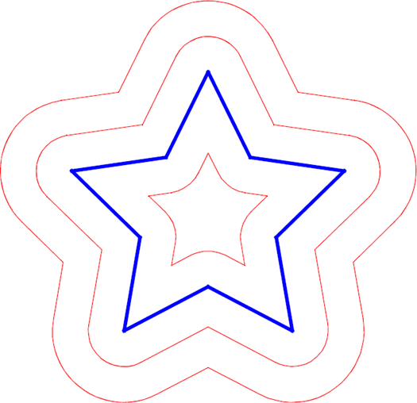
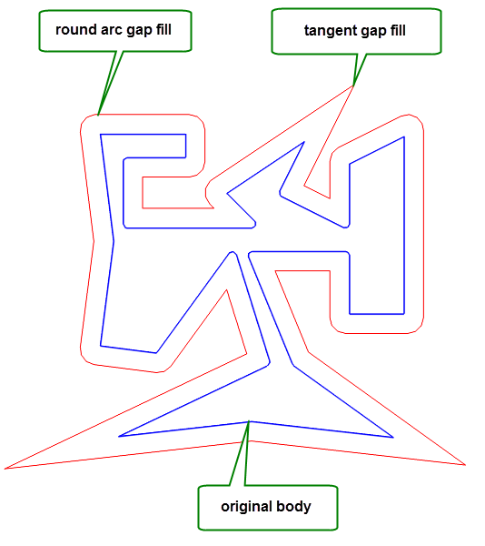

| |
Wire Modeling |
| <<< Introduction To Sheets and Wires | Chapters | Sheet Modeling >>> |
Parasolid provides some specific functionality for modeling operations which can be applied to wire bodies, and for creating wire bodies from other entities:
Given a closed wire body, it is possible to create a face whose boundary contains the edges of the wire body using PK_EDGE_make_faces_from_wire. This is the reverse operation to piercing the face on a single-faced sheet. The new face created does not have a surface attached, but one may be attached using either PK_FACE_attach_surfs or PK_FACE_attach_surf_fitting.
This function allows faces with holes or bodies with separate profiles to be created. Each loop in a new face is created from a closed loop of edges in the wire body and the function allows you to specify how many faces are created and the sense of each loop with respect to the edges.
The wire body becomes a sheet body if there are no wire-frame edges remaining, otherwise it becomes a general body.
The blending of vertices in a wire body is done by PK_VERTEX_make_blend, and the principles are exactly the same as for blending vertices of sheet bodies.
See Section 46.4.1, “Blending vertices on sheet bodies”, for details of this operation.
You can offset a planar wire body in the plane in which it lies using PK_BODY_offset_planar_wire, producing a new wire body. The body can be offset either inwards or outwards, as shown in Figure 45-1.
Figure 45-1 Various offsets of a wire body
|
Note: This functionality does not support facet geometry. |
To create a new body, edge curves are offset by the specified distance, and any gaps created as a result of splitting vertices are filled. PK_BODY_offset_planar_wire provides the following options to let you control the result:
gap_fill constrained_gap_fill gap_fill_angle |
A group of options that let you control how the gaps created from split vertices are filled. See Section 45.4.1, “Controlling how gaps between vertices are filled”, for information. |
local_check |
|
tolerance |
A tolerance for converting curves. See Section 45.4.2, “Return information for offset wire bodies”, for information. |
repair_self_int |
Whether to repair self-intersecting bodies. If this is PK_LOGICAL_true, any edge pairs that still intersect after offsetting, are trimmed back to the intersection. Figure 45-2 shows an example of this. |
allow_disjoint |
Whether return bodies may be disjoint. Figure 45-2 shows an example of a disjoint result. |
Figure 45-2 Fixing self-intersecting offsets and returning disjoint bodies
For examples of this functionality, see the code example in the
C++\Code Examples\Modelling\Offset
Planar
Wire
folder, located in
example_applications
in your Parasolid installation folder.
When a wire body is offset, vertices on the original body may be split, introducing gaps in the resulting offset body. Parasolid provides a number of options that let you control how those gaps are filled.
Parasolid provides several methods for filling gaps. You use the PK_VERTEX_gap_fill_t datatype to choose between the following:
For each call to PK_BODY_offset_planar_wire, you can use up to two of these methods, using the
gap_fill
and
constrained_gap_fill
options.
You control which method is used at each split vertex in the body using the
gap_fill_angle
option. This option takes a double constraint that defines an angular interval in radians:
constrained_gap_fill
is used.
gap_fill
is used. Figure 45-3 illustrates how you can use these options to produce an offset wire body that combines two different gap fill methods within a single result body.
Figure 45-3 Combining different gap fill methods using angle constraints
For more information on how to use double constraints, see Section 65.7, “Constraining identification of details”.
PK_BODY_offset_planar_wire returns information pairing the edges of the new offset wire body with their originating edges or vertices (in the case of new edge segments), using the standard data structure PK_TOPOL_track_r_t.
The geometry of a new edge is only of the same type as the geometry of the original edge if it was originally a line or circular edge; otherwise it is generated approximately. You can use the
tolerance
option to control this approximation. Depending on the value of
repair_self_int
, edges may be split to avoid self-intersecting offsets.
The direction of the edges of a wire body can be changed with the following functions:
|
reverses an edge and its associated geometry (this function also supports sheet, solid and general bodies) |
|
|
orientates all the edges of a wire body in the same direction as a given edge |
PK_VERTEX_remove_edge can be used to split a wire body into two bodies.
The function takes a vertex and an edge to be separated, and adds a new vertex to the end of the edge, introducing a cut into the body. If the body is a wire body, and if it is split into two pieces as a result of being cut at the vertex, a new body is created.
PK_CURVE_make_wire_body_2 creates a wire body from an array of curves. The wire body that is created can be open or closed, and may be disjoint. This function receives and returns the following arguments:
|
An array of curves used to make a wire body, together with the number of those curves. If any supplied curves come from a partition other than the current partition, then a copy of that curve is used. Note: The supplied curves cannot be 2D B-curves. |
|
An array of intervals. Each interval describes the bound for the corresponding curve in |
|
|
A set of options. See Section 45.7.2, “Specifying options”. |
|
The wire body. This is always returned in the current partition, even if some of the received curves come from a different partition. |
|
|
|
An array of the edges in the wire body. Returning this information can be controlled using |
|
An array of length |
If any of the supplied curves contain discontinuities, a new edge is created for each continuous section of the curve. Curves are never joined together to form a single edge.
Note: The order that edges are returned in the
new_edges
array is undefined. |
The
edge_index
array returns information about which curves in the received curves array were used to create each edge in the resulting body. This is illustrated in
Figure 45-4.
Figure 45-4 Mapping supplied curves to returned edges
In
Figure 45-4, a wire body containing 4 edges has been created from an array of 2 curves, one of which contains 2 discontinuities. The value of
edge_index
for this wire body is [0, 1, 1, 1].
Returning this information is controlled using
want_indices
. See Section 45.7.2, “Specifying options”.
You can set a number of options using the associated PK_CURVE_make_wire_body_o_t options structure, as follows:
|
The maximum separation allowed between two curves that are to be connected. Default: 1.0e-6. |
|
Whether disjoint bodies can be created. If this is PK_LOGICAL_false, then PK_CURVE_make_wire_body_2 fails with error PK_ERROR_not_connected if you pass a set of curves that would result in a disjoint body. Default: PK_LOGICAL_true. |
allow_general |
Whether general wire bodies can be created. If this is PK_LOGICAL_true and general topology is enabled (PK_SESSION_set_general_topology), a general wire body is created. Default: PK_LOGICAL_false. |
|
Whether to check the created body for errors. Default: PK_LOGICAL_true. |
|
Whether to return the edges of the returned body in |
|
Whether to return index information that maps edges in the returned |
sequential |
Whether the received
You should not use this option if |
PK_EDGE_make_wire_body creates a wire body from an array of edges. The supplied edges can come from a number of different parts, but they must not intersect or coincide to any degree. This function receives and returns the following arguments:
|
An array of edges used to create a wire body, together with the number of edges. Edges can be passed to PK_EDGE_make_wire_body in any order. |
|
|
A set of options. See Section 45.8.1, “Specifying options”. |
PK_EDGE_make_wire_body can return a disjoint wire body if required, and can create a non-manifold body if general topology is enabled in Parasolid.
For information on how to enable the creation of general topology, see Section 15.8, “Creating general bodies”.
You can set a number of options using the associated PK_EDGE_make_wire_body_o_t options structure, as follows:
|
Whether disjoint bodies can be created. If this is PK_LOGICAL_false, then PK_EDGE_make_wire_body fails with error PK_ERROR_disjoint if you pass a set of edges that would result in a disjoint body. Default: PK_LOGICAL_false. |
|
|
|
Whether to use nominal geometry on any of the original edges.
If this is PK_LOGICAL_true, and |
|
The tolerance to be used when curve approximation is turned on. Default: 1.0e-5. |
| <<< Introduction To Sheets and Wires | Chapters | Sheet Modeling >>> |